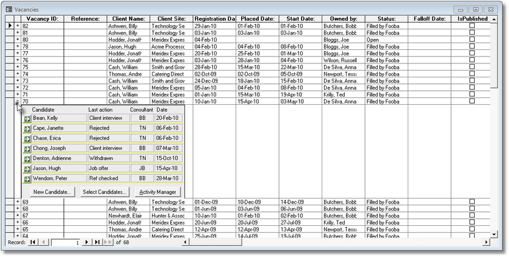

|
|
PRS News & Tips | December 2010 |
Latest News
We’ve just released PRS 8.0.3 — the most obvious addition is a user interface makeover for the Vacancies form — usability has been greatly improved.
In addition we’ve added options to allow you to:
-
Import Outlook Contacts directly into the PRS.
-
Customise the Top Note text color.
-
Set the time of PRS generated Outlook Reminders.
These and other features are detailed below. For a full list of the changes since the previous release see the PRS Changelog web page.
To download and upgrade go to the Installing the Latest PRS Client section on our Updates web page and follow the instructions.
What’s New in 8.0.3
Revamped Vacancies User Interface
 in version 8.0.3
in version 8.0.3
The Vacancies form is now divided into Tabbed pages instead of a single scrolled form.
The Candidate Activity section has been moved to Page 1 because it is the recruitment process’s most viewed and used section.
Page 2 contains vacancy skills, activity, notes, invoicing and billing, and linked documents. The Vacancy type tabs have been moved to a separate sidebar on the right-hand side of the form where they are always visible.
Import Contacts directly from Outlook
in version 8.0.3
Use the new PRS Tools→Import Outlook Contacts… menu command to create new PRS Personnel and Site records from your Outlook Contacts. It checks for duplicate Personnel names and Email addresses and you can edit and select the contacts you want to import.
Set Outlook Reminders time
in version 8.0.3
You can now set the time that PRS Reminders to the Outlook Calendar are scheduled:
Set Top Note text color
in version 8.0.3
You can now customise the color of Top Note text using the new Top Note Color command button to the Appearance tab of the Tools→Options dialog.
Send SMS message as EMail
in version 8.0.3
When sending multiple SMS text messages using Message Merge you now have the option of also sending the message in an EMail.

Timesheet Billing Units
in version 8.0.3
You can now set the contract timesheet units of work on a per timesheet basis:

The default vacancy Billing Units are set in the Contract tab on the Vacancies form.
The selected units are automatically displayed on related invoices:

|
Note
|
To use this feature you will first need to upgrade your shared PRS database (detailed in the PRS Changelog). |
PRS Mail Data
in version 8.0.3
Incoming Email messages containing PRS Mail Data are recognised by the InBox Tool — the data is extracted automatically and can be used to create and update personnel records and process job applications. When a message containing Mail Data is detected the body of the InBox Mail Message is displayed in blue text:
This feature could be used to process job applications sent from your website. The PRS Mail Data formatting conventions are detailed in the PRS Administration Guide.
Tips and Tricks
Candidate Activity in Datasheet View
If you are viewing vacancies in datasheet view (Window→Toggle Form View) you don’t have to revert to form view to manage candidate activity, just click in the plus sign next to the vacancy to expose the Candidate Activity sub-form.

One-off Mail Merge Templates
Creating a separate template for personalised one-off messages is unnecessary, just use the Dear or Hi message templates. These simple templates are great for ad hoc mail merge messages.
Microsoft Office 2010
Office 2010 is Microsoft’s latest version of Office. The PRS is compatible with the 32 bit version of Office 2010 (as well as all older versions of Microsoft Office) — you should install the 32 bit version of Office 2010 even on 64 bit Windows (Microsoft recommends that you install 32 bit Office in preference to 64 bit Office unless you have special 64 bit specific requirements).
Need help?
Our Support web page explains how to get answers to PRS questions and includes links to articles on Maintaining Database Reliability and Performance and PRS Best Practice Deployment.
|
Important
|
If you no longer wish to receive this newsletter please email support@methods.co.nz with the word UNSUBSCRIBE in the subject line. |